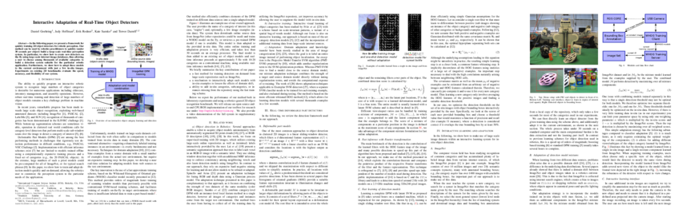
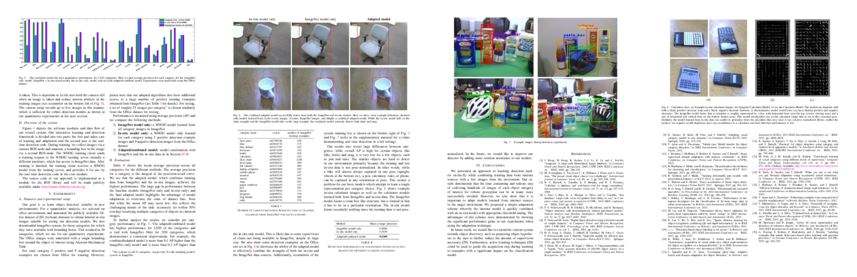

Raptor is an interactive learning approach for object detection models and a showcase how to quickly perform learning and adaptation with large-scale datasets. The details about the method are given in the following paper:
Daniel Göhring, Judy Hoffman, Erik Rodner, Kate Saenko, and Trevor Darrell.
Interactive Adaptation of Real-Time Object Detectors.
International Conference on Robotics and Automation (ICRA). 2014


Video
Summary
We present a framework for quickly training 2D object detectors for robotic perception. Our method can be used by robotics practitioners to quickly (under 30 seconds per object) build a large-scale real-time perception system. In particular, we show how to create new detectors on the fly using large-scale internet image databases, thus allowing a user to choose among thousands of available categories to build a detection system suitable for the particular robotic application. Furthermore, we show how to adapt these models to the current environment with just a few in-situ images. Experiments on existing 2D benchmarks evaluate the speed, accuracy, and flexibility of our system.
Software
The approach described in the paper is a prototype we build on top of the following methods and software:- Whitened HOG approach of Bharath Hariharan
- Fast DPM/HOG detection with FFT by Francois Fleuret and Charles Dubout: code
- ROS/C++ module for interactive annotation and detection (available soon)
Office dataset with bounding boxes
To perform quantitative experiments with object detection and domain adaptation, we used Amazon Mechanical Turk to annotate the Office dataset of Kate Saenko:
- Bounding box annotations and images of the Office dataset (original sizes for the webcam domain and reduced image sizes for DSLR in contrast to the original dataset)
- Our software for obtaining bounding boxes using Amazon Mechanical Turk is also free available: mturk scripts and webpage
Bibtex
@inproceedings{Goehring14:ITR,
title = {Interactive Adaptation of Real-Time Object Detectors},
booktitle = {International Conference on Robotics and Automation (ICRA)},
author = {Daniel Göhring and Judy Hoffman and Erik Rodner and Kate Saenko and Trevor Darrell},
year = {2014}
}